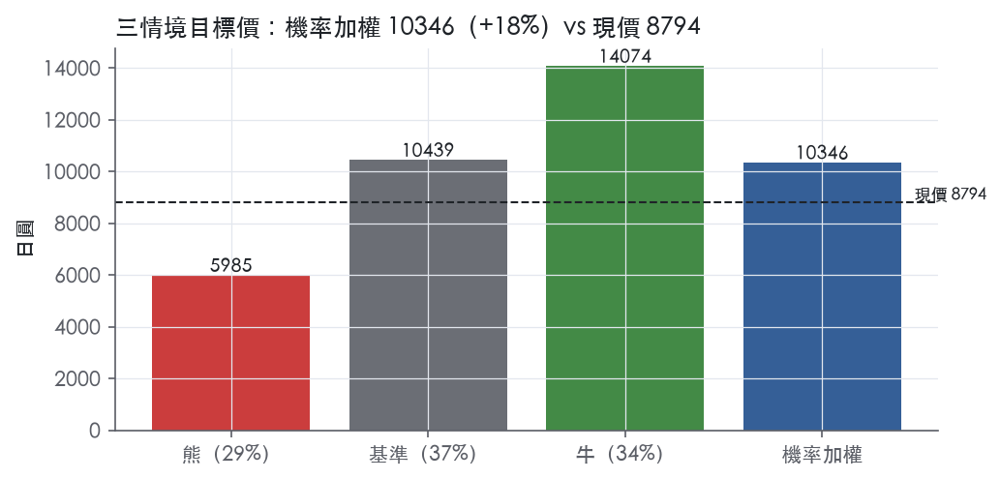
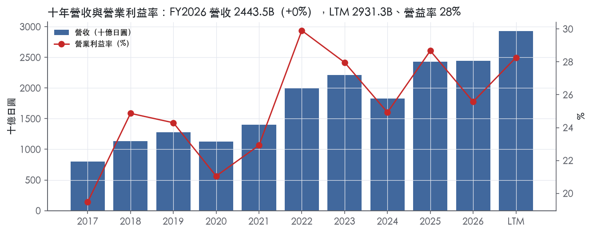
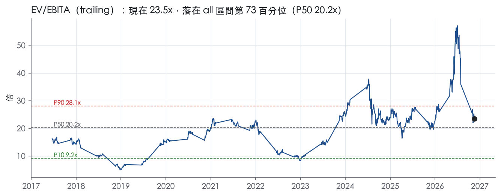
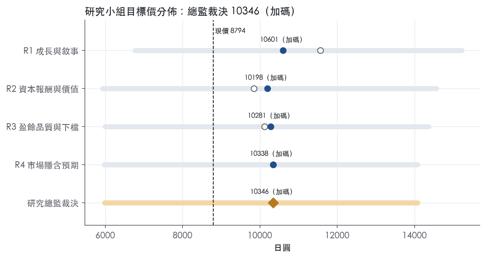
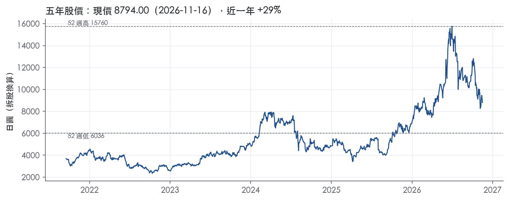

評等總表 › 未分類 › 8035.T
計畫可信、峰頂折價已付，看多｜評等 加碼｜目標價 10346
| 報告日 | 評等 | 目標價 | 當時股價 | 超額報酬 |
|---|---|---|---|---|
| 2026-11-16 | 加碼 | 10,346 | 8,794 | +11.6% |
| 評等 | 加碼 |
| 12 個月目標價 | 10346 日圓 |
| 現價 | 8794.00 日圓（2026-11-16） |
| 預期報酬 | 股價 +17.7%＋股息 1.8%＝總報酬 +19.4%；日股門檻 7.8%，超額 +11.6% |
| 估值方法 | EV/EBITA 18.0x，套在未來四季的EBITA |
| 三情境 | 熊 5985／基準 10439／牛 14074 |
| 研究流程 | 四位研究員兩輪辯論＋研究總監裁決 |
| 資料來源 | EDINET、TDnet、J-Quants、Yahoo、FRED（全免費） |
計畫可信、峰頂折價已付，看多（研究總監裁決，四位研究員兩輪辯論後）
評等 加碼｜12 個月目標價 10346 日圓（總監三情境機率加權 10383 與研究員中位數 10310 各半）｜現價 8794.00（2026-11-16）
預期報酬：股價 +17.7%＋股息 1.8%＝總報酬 +19.4%。日股門檻 7.8%，超額 +11.6%。
估值方法：EV/EBITA 18.0x，套在未來四季的EBITA。三情境：熊 5985（29%）／基準 10439（37%）／牛 14074（34%）。
什麼會讓研究總監改變看法：FY2027Q3 前受金跌破 300B 或單季營收低於 935.07B，或 2027-05 的 FY2028 計畫為減收，y1 退回 30%、倍數移向 13x、轉中性；FY2028 計畫營業利益不低於 1,169.0B 則倍數上調至 22x。
| 過去四季（實際，FY2027Q2） | 未來四季 | 第 5–8 季 | 第 9–12 季 | |
|---|---|---|---|---|
| 營收（B） | 2,931.3B | 3,928.0B | 4,163.6B | 3,997.1B |
| 營收成長 | 17.7% | 34.0% | 6.0% | -4.0% |
| 營業利益率 | 28.3% | 32.0% | 31.0% | 27.0% |
| EPS（日圓） | 310.65 | 413.65 | 428.85 | 362.59 |
| EPS 成長 | 31.9% | 33.2% | 3.7% | -15.4% |
| 每股股息（日圓） | — | 0.00 | 0.00 | 0.00 |
| P/E（現價） | 28.3x | 21.3x | 20.5x | 24.3x |
| 股息殖利率（現價） | 1.8% | — | — | — |
過去四季為申報數字；預測為研究總監的假設、程式計算。倍數與殖利率都用現價計算，用來看現價對應各期獲利的高低。
| 情境 | 機率（歷史） | 故事 | 未來四季營收成長 | 第 5–8 季營益率 | 倍數 | 目標價 | 股價漲跌 |
|---|---|---|---|---|---|---|---|
| 熊 | 29%（29%） | 對應風險表第 1 條客戶資本支出反轉與第 3 條中國再降：下半年小幅未達、FY2028 上半年持平到小減，大客戶 2027 年中下修資本支出，庫存評價損與呆帳使谷底營益率回到 FY2020 的 21%，匯率走本行上行路徑 145 | 20.0% | 21.0% | 13.0x | 5985 | -31.9% |
| 基準 | 37%（37%） | FY2027 達成計畫 3,700.0B，FY2028 上半年較下半年回落約 7%，Q5–Q8 成長降至個位數、Q9–Q12 轉負，市場付峰頂折價倍數 | 34.0% | 31.0% | 18.0x | 10439 | 18.7% |
| 牛 | 34%（34%） | FY2028 計畫仍為增收，先進封裝與記憶體投資接棒，營益率逼近中期目標，倍數 22x 低於現行 23.5x 不靠擴張，匯率走本行下行路徑 160 | 40.0% | 34.0% | 22.0x | 14074 | 60.0% |
目標價由程式依研究總監的驅動與倍數計算；機率由研究總監給定。括號內是歷史頻率：把這檔股票過去十年 12 個月報酬的波動形狀，置中在基準情境，結果落在各情境附近的比例。

四位研究員用不同方法各自估值，回應研究總監的質疑後交出第二輪，最後由總監逐點裁決。各研究員的主張見第七章，裁決理由見第八章，完整論證見《研究底稿》。
| 立場（一輪→二輪） | 加權目標價（一輪→二輪） | 評等（一輪→二輪） | 第二輪倍數 | 熊～牛目標價 | |
|---|---|---|---|---|---|
| R1 成長與敘事 | 看多→看多 | 11567→10601 | 買進→加碼 | 18.0x | 6769～15226 |
| R2 資本報酬與價值 | 中性→看多 | 9848→10198 | 加碼→加碼 | 19.0x | 5934～14562 |
| R3 盈餘品質與下檔 | 中性→看多 | 10120→10281 | 加碼→加碼 | 19.0x | 5989～14360 |
| R4 市場隱含預期 | 看多→看多 | 10346→10338 | 加碼→加碼 | 18.0x | 5977～14077 |
| 研究總監裁決 | 看多 | 10346 | 加碼 | 18.0x | 5985～14074 |
目標價由程式依各自的驅動與倍數計算；評等＝機率加權總報酬 − 日股門檻。
東京エレクトロン（TEL）是全球前五大半導體製造裝置供應商，單一業務為半導體製造裝置的開發、製造、銷售與保修服務。公司集團由本社及27家關係會社構成，涵蓋開發製造（東京エレクトロンテクノロジーソリューションズ、九州、宮城等子公司）、北美製造（TEL Manufacturing and Engineering of America）、全球保修服務（東京エレクトロンFE、美國、韓國、歐洲子公司）與次世代技術開發等職能分工。客戶是全球晶圓代工廠、記憶體廠與IDM大廠，最大兩家客戶是三星電子與台積電。公司自我定位為「半導體製造裝置的領導企業」，基本理念是以最先端技術與服務貢獻社會發展。TEL是出口型重資產設備股，營收高度綁定全球晶圓廠資本支出週期，尤其近兩年AI伺服器用先進製程與先進封裝投資是主要需求來源。
TEL只有「半導體製造裝置」單一報導分部，有報明確省略分部別記載。產品線包括塗佈顯影機（コータ／デベロッパ）、蝕刻裝置、成膜裝置、清洗裝置、先端封裝用製程裝置、晶圓探針台（ウェーハプローバ）等，公司稱擁有業界最大出貨實績（累計超過100,000台）及業界最大專利持有數（超過26,000件）。研發重心放在EUV高解析度曝光配套製程、三維堆疊記憶體等結構日趨複雜下的製程最佳化與多工程整合開發。FY2026研發費用277.87B日圓，年增11.1%，佔營收比重11.4%，較前期提高1.1個百分點。FY2026設備投資總額216.0B日圓，主要投向東京エレクトロン宮城（82.2B）、テクノロジーソリューションズ（33.5B）、九州（31.3B）與韓國子公司（26.2B）的新開發棟與生產物流棟建設。公司中期經營計畫目標設定在FY2027（2027年3月期）：營收3,000.0B日圓以上、營業利益率35%以上、ROE 30%以上；同時設定FY2025起五年成長投資計畫，研發投資累計1,500.0B日圓以上、資本支出累計700.0B日圓以上、全球招募約10,000名人力。從年度表看，FY2025營收2,431.57B、FY2026營收2,443.53B幾乎持平，但FY2027H1營收已達1,667.46B，顯示設備需求明顯加速。
TEL的銷售高度集中在前段晶圓製程大客戶，FY2026最大客戶三星電子貢獻368.08B日圓、台積電貢獻315.81B日圓，合計約佔全年營收兩成八。地區結構上，FY2026以地理區分：中國832.56B、韓國543.86B、台灣499.85B、北美166.45B（其中美國166.24B）、日本239.43B、歐洲67.41B、其他93.99B，合計2,443.53B；相較FY2025的中國1,015.06B、台灣410.63B、韓國409.01B、北美242.96B（美國242.80B）、日本189.98B、歐洲75.52B、其他88.40B，合計2,431.57B，可見FY2026中國占比明顯下滑（出口管制與中國自主化放緩影響），韓國與台灣占比上升。通路上公司由本社直接向客戶銷售子公司製造的機台，保修服務則由各地子公司（美國、韓國、歐洲、台灣）就近提供，形成「本社銷售＋海外子公司保修」的全球化佈局。有形固定資產FY2026合計589.34B日圓，主要集中在日本（419.96B）、韓國（66.82B）與其他地區（102.56B），顯示產能擴充以日本本土為主軸，同時在韓國就近佈局客戶端支援。
FY2026Q3營收552.05B，年減15.7%，營益率21.0%，是近八季最低的一季（最近8季表）；FY2026Q4營收回升至711.82B，年增8.6%，營益率回彈至28.9%（最近8季表）。FY2027Q1營收732.39B，年增33.3%，營益率維持28.9%（最近8季表）；FY2027Q2營收大幅跳升至935.07B，年增48.4%，營益率擴張至31.6%，淨利212.59B、EPS 93.56日圓（最近8季表）。對應公司FY2027H1（2026年4月至9月）財報：合併營收1,667.46B日圓，年增41.3%，營業利益506.78B，年增67.2%，經常利益514.40B，年增67.6%，歸屬母公司中間純利益376.93B，年增56.0%。公司說明本期營收、營業利益、經常利益、中間純利益皆超越前次預估（前次預估營收1,620.0B、營業利益458.0B、經常利益464.0B、純利益349.0B），增減率分別為2.9%、10.6%、10.9%、8.0%。公司將此歸因於「數據中心向けAIサーバー的需求擴大帶動半導體市場整體成長」，以及「AI用途半導體相關設備投資顯著成長」。基於此，公司首次公開FY2027全年業績預估：營收3,700.0B、營業利益1,169.0B、經常利益1,179.0B、歸屬母公司淨利865.0B、EPS 381.69日圓，較FY2026實績（營收2,443.53B、營業利益624.94B、經常利益630.34B、淨利574.45B）分別增51.4%、87.1%、87.0%、50.6%。期末配息預估修正為每股108.00日圓（分割後），加上中間配息415.00日圓，公司維持配息率約50%的業績連動型股利政策。FY2027H1期間公司完成自己股買回150.03B日圓，並支付配息166.04B日圓；此外公司已於2026年10月1日完成1股分割為5股。
公司將成長引擎歸因於「生成AI登場後，AI的利活用擴大，數位技術與各產業關係空前緊密，半導體的角色與其技術革新重要性日益提高」。公司明言「足元旺盛的AI需求使高性能半導體裝置供需緊張，裝置價格有上漲傾向，但中長期供需會趨於穩定；AI伺服器、機器人等應用擴大，半導體市場預期持續成長」。策略上公司要「以業界最大出貨實績與最大專利持有數為基礎，向半導體微細化（スケーリング）與先端封裝兩大領域提供高附加價值新產品與技術服務，以達成中期經營計畫」。資本政策上，公司明言「不持有政策保有股份為基本方針，僅在具高度合理性時持有」，目前非上市股以外的特定投資股合計帳列金額20.23B日圓，涵蓋32個標的，FY2026未新增取得、賣出21個標的合計17.02B日圓，顯示公司持續精簡交叉持股以回應東證對資本效率的要求。決算短信則強調本期上修全年預估的直接原因是「數據中心向AI伺服器需求擴大，帶動前期顧客設備投資動向超預期」。整體而言，TEL的敘事是單一業務、單一客戶群（晶圓代工＋記憶體＋IDM大廠）、單一驅動力（AI帶動先進製程與先進封裝資本支出）的高槓桿設備股，FY2027全年預估隱含的營益率（1,169.0B／3,700.0B，約31.6%）若兌現將明顯超越FY2026的25.6%（dv.營益率.FY2026推算），顯示公司對規模經濟與產品組合改善有相當信心。但公司自己也承認中東地緊局勢若長期化，供應鏈中斷風險需持續觀察，這是上修財測之外仍保留的風險提示。台灣子公司前員工涉入機密資訊事件遭起訴並處以罰金（分別向客戶賠付100M台幣、向台灣政府賠付50M台幣，合計150M台幣，緩刑三年），顯示公司在資安與合規治理上仍有改善空間，雖金額對集團財務影響有限。

TEL 的護城河評為「寬」，趨勢「穩定」。主要依據有兩項：一是製程技術與專利累積形成的無形資產，二是龐大裝機基礎帶來的轉換成本。過去 9 年 ROIC 每年都高於資本成本，最低一年仍大幅超過門檻，我們有把握未來 10 年以上維持這個狀態。
TEL 的優勢來自「無形資產」與「轉換成本」兩類，其餘三類沒有足夠證據，不列入。
無形資產（專利、製程 know-how）：公司稱擁有業界最大的特許保有數（26,000 件以上），並以此為基礎提供涵蓋微細化與先端封裝的廣泛產品線。公司持續研究電漿技術、熱控制技術、模擬技術、汙染控制技術等「重要且能與他社差別化的各種核心技術」。FY2026 研發費用 277,866M 日圓，占營收比重 11.4%。研發規模如此之大，後進者很難在多條產品線同時追上，專利牆會隨每年投入持續加厚。
轉換成本（裝機基礎與製程整合）：公司稱出貨實績為業界最大（累計 100,000 台以上）。保修服務由東京エレクトロン FE、美國、韓國、歐洲等子公司在當地提供。公司強化跨多道製程工序的「製程整合評價」能力，以電氣特性數據驗證從電晶體到配線的整段製程模組。設備一旦經客戶產線驗證並與上下游工序綁定，更換供應商就要重新驗證、承擔良率風險，因此客戶黏著度高。最大客戶三星電子與台積電在 FY2026 分別貢獻 368,079M 與 315,813M 日圓，兩年都位列主要客戶，顯示關係延續。
整體而言數字支持寬護城河，但有兩處需要說明的衝突。
支持的部分如下：
衝突一：ROIC 波動不小。 ROIC 標準差 6.6%，高低點落在 29.2% 與 50.3%；營收成長標準差達 20.8%。我們把這解讀為設備業的週期性，而非護城河鬆動：利潤率的低點也遠高於資本成本，營收波動沒有轉成毛利率的結構性下滑，所以維持「寬」。
衝突二：樣本與資本成本口徑。 ROIC 只有 9 年資料，略短於「10 年以上」的評級門檻。資本成本代理值用的是美國 10 年債（5.1），不是日本 10 年公債（2.841）。材料裡沒有本行日本總經前提，我們沿用美債口徑；這對日圓計價的公司而言門檻偏嚴，ROIC 超額部分是保守估計。
最大的侵蝕風險是中國在地化與地緣政治，其次是巨額投資推高投入資本。
TEL 的目標倍數應相對同業給予溢價：ROIC 長期遠高於資本成本、毛利率波動小，兩者合併支撐較長的超額報酬期間。不過營收週期性強，倍數應套用在中週期盈餘上，不宜套用在峰值盈餘。現行 P/E 28.3x 接近 5 年中位數 29.3x，溢價幅度應以台灣客戶事件與中國營收走向作為下修觸發點。
| 指標 | 最新 | 十年平均 | 標準差 | 最低 | 最高 |
|---|---|---|---|---|---|
| ROIC | 33.1% | 38.7% | 6.6% | 29.2% | 50.3% |
| 毛利率 | 45.3% | 43.2% | 2.5% | 40.1% | 47.1% |
| 營業利益率 | 25.6% | 25.0% | 3.1% | 19.5% | 29.9% |
| FCF 利潤率 | 13.1% | 13.6% | 3.4% | 6.1% | 17.8% |
| ROE | 29.6% | 28.7% | 4.6% | 21.8% | 37.2% |
程式計算。資本成本代理值（10 年債＋5%）：10.1%；ROIC 平均減資本成本：28.6%；ROIC 有資料的 9 年中，高於資本成本 9 年。
東電子的營業現金流／淨利LTM為1.07x、近三年平均1.07x，但十年平均僅0.96x，顯示現金轉換並非每年都穩穩站上1倍。FY2026資本支出／營收攀升到9.0%（量化底稿dv.capex_pct.FY2026），把FCF／淨利從LTM的0.85x往下拉到近三年平均0.72x、十年平均0.71x，對應計分表的唯一黃燈。公司本身也在FY2026財報中坦言「積極投資研發與設備」是毛利率、營益率雙降的主因之一。這不是盈餘品質造假，是擴產週期的正常現金外流。
FY2026營業活動現金流539.73B日圓，較前期減少42.44B日圓，公司解釋主因是稅金等調整前純利益748.18B日圓與折舊費80.98B日圓挹注現金，但法人稅支付178.37B日圓、以及投資有價證券出售損益115.49B日圓（處分政策保有股的非現金損益科目）拉低了現金流。換算成比率，LTM營業現金流／淨利1.07x仍大於1，顯示帳上淨利有實際現金支撐，應計比率為負1.6%，代表盈餘沒有靠應計項目灌水，是正向訊號。FY2026自由現金流創歷史新高達433.25B日圓，但要注意這是在資本支出比例已升到9.0%之後的結果，半期（FY2027H1）資料顯示營業現金流469.93B日圓，較去年同期250.85B日圓明顯放大，主因前受金增加82.86B日圓與稅前純利益507.79B日圓，現金轉換暫時無虞。
東電子不做美式非GAAP調整，但財報裡有兩塊「一次性／非核心」科目投資研究員要自己剔除。第一是FY2026特別利益120.73B日圓，主要是出售部分政策保有股產生的投資有價證券出售益115.49B日圓，這塊墊高了稅前純利益但不是本業現金流，CFO科目裡也把這115.49B日圓列為現金流出項目扣除，顯示現金流表已經把這筆損益做了正確處理。第二是FY2027H1特別損失中的6.22B日圓「災害による損失」，公司說明是令和8年熊本地震造成的建物與存貨損失及估計復原費用，金額相對半期營業利益506.78B日圓很小，屬於一次性，不影響核心獲利判斷。研發費用FY2026年增27.85B日圓（11.1%增）至277.87B日圓，這是真實成本，應計入估值模型的持續性費用，不應加回。
東電子是淨現金公司，淨負債／EBITDA為-0.63x（LTM）、近三年-0.75x、十年-0.77x，全數綠燈，槓桿完全不是估值的限制因子。FY2026自己資本比率71.5%，FY2027H1微降至68.2%，主因是自己株式取得支出150.03B日圓與配當支付166.04B日圓拉低淨資產增幅，但這是股東回饋造成的下降而非虧損侵蝕，性質良性。股東回饋方面，FY2026股利支付271.62B日圓加自己股買回150.01B日圓，合計股東還原421.62B日圓，相當於FCF的97%，對應計分表（股利＋回購）／淨利LTM 82.8%、近三年77.7%、十年63.3%全綠，顯示長期穩定且逐年提升的股東回饋政策，與東證要求改善PBR、處分政策保有股的方向一致。FY2026年10月1日還做了1股分5股的股票分割，目的是降低投資單位門檻（公司明言為配合東證對望ましい投資單位之要求），這是流動性措施不影響基本面。稀釋股數年變動LTM為-0.2%、近三年-0.8%，顯示庫藏股消卻（FY2027H1消卻95.47B日圓面額自己股）淨減少股數，對每股指標是正向（）。
計分表八項指標中僅「自由現金流／淨利」亮黃燈，其餘七項皆為綠燈，沒有紅燈，也沒有程式標出的紅旗。這個黃燈的成因明確可解釋：FY2026資本支出／營收由FY2025的6.9%跳升到9.0%，公司MD&A點名是因應AI伺服器需求擴大產能，在宮城縣大和町、熊本縣合志市的開發棟與岩手縣奥州市的生產物流中心完工所致，屬於成長性資本支出而非盈餘品質惡化，判斷為可解釋的假警報。SBC／營收與利息保障倍數兩欄位缺乏資料（無燈號），因公司財報未單獨揭露股權酬勞金額、且淨現金狀態下利息費用極小，無法計算有意義的保障倍數，這是資料口徑限制而非真實風險。應計比率連續為負（LTM -1.6%、近三年-1.1%），代表盈餘甚至比應計項目隱含的現金流更保守，不是問題而是盈餘品質的正向佐證。
估值研究員可以用GAAP淨利直接做評價基礎，不需要大幅打折，因為現金轉換長期貼近1倍、應計比率為負、沒有未解釋的紅旗。唯一要注意的是FY2026、FY2027資本支出比例走高（9.0%、且H1投資CF仍達79.22B日圓）會壓低自由現金流／淨利到0.7–0.85x區間，用FCF估值（如DCF或FCF殖利率）時應假設資本支出在擴產週期內維持高位，不要用FY2023以前3–4%的低資本支出比例外推。槓桿方面公司是淨現金，完全不限制估值倍數，EV/EBITDA 21.1x、P/E 28.3x的現在分位（45.1%、5年）反映的是成長性溢價而非財務風險折價。
| 項目 | LTM | 近三年 | 十年 | 燈號 | 規則 |
|---|---|---|---|---|---|
| 營業現金流／淨利 | 1.07x | 1.07x | 0.96x | 綠 | ≥1.00x 綠、<0.80x 紅 |
| 自由現金流／淨利 | 0.85x | 0.72x | 0.71x | 黃 | ≥0.90x 綠、<0.60x 紅 |
| 應計比率（(淨利−CFO)／平均總資產） | -1.6% | -1.1% | 1.8% | 綠 | ≤0.0% 綠、>5.0% 紅 |
| SBC／營收 | — | — | — | — | ≤3.0% 綠、>8.0% 紅 |
| 淨負債／EBITDA | -0.63x | -0.75x | -0.77x | 綠 | ≤1.50x 綠、>3.00x 紅 |
| 利息保障倍數（營業利益／利息） | — | — | — | — | ≥8.00x 綠、<3.00x 紅 |
| 稀釋股數年變動 | -0.2% | -0.8% | -0.8% | 綠 | ≤0.0% 綠、>3.0% 紅 |
| （股利＋回購）／淨利 | 82.8% | 77.7% | 63.3% | 綠 | ≥50.0% 綠、<0.0% 紅 |
程式計算；燈號以 LTM（無則近三年平均）判定。
| 風險 | 觸發指標（看什麼數字、在哪裡看） | 對 EPS 的影響方向與粗略幅度 | 未來 12 個月發生機率（高／中／低） | 出處 |
|---|---|---|---|---|
| 客戶資本支出週期反轉（半導體/AI設備投資急縮） | 每季決算短信營收年增率、前五大客戶訂單動向、半導體SOX指數 | 負向，大（FY2026Q3單季營收已年減15.7%，營益率掉到21.0%，最近8季表） | 中 | |
| 客戶集中度過高（三星、台積電兩大客戶） | 每年有報セグメント情報揭露的前幾大客戶營收占比 | 負向，中～大（FY2026兩家合計約683.89B，佔全年營收28%） | 中 | |
| 地緣政治／出口管制導致中國市場驟降 | 每年各地區營收揭露（中國占比變化）、美中技術出口規制公告 | 負向，大（中國占比FY2025的1,015.06B降至FY2026的832.56B） | 高 | |
| 公司剛上修的FY2027財測能否兌現（股價已隱含高成長） | 每季決算短信實績對照公司財測差異欄、股息連動配息率50% | 若不達標，EPS下修，方向負向，幅度視差距而定（公司FY2027預估EPS 381.69日圓，較FY2026的250.91日圓增50.6%） | 中 | 研究判斷 |
| 日本本土生產集中（自然災害、供應鏈中斷） | 有報揭露生產拠點所在地、地震/災害公告、災害による損失特別損失項目 | 負向，中（FY2027H1已出現「災害による損失」6,220M日圓特別損失） | 低 |
客戶資本支出週期反轉是公司自己排在風險首位的項目：公司坦言「半導體市場的急激縮小或需給バランス悪化，或半導體價格變化導致顧客投資急縮時，會發生過剩庫存增加、顧客財務惡化導致的呆帳損失等風險」。這不是空話——FY2026Q3單季營收552.05B、年減15.7%，營益率跌到21.0%（最近8季表），正是上一輪投資放緩的實例。目前公司FY2027全年預估隱含的31.6%營益率（1,169.0B／3,700.0B）建立在「數據中心向AIサーバー需求擴大」這一單一敘事上，若AI資本支出週期提前見頂，獲利彈性會同樣劇烈地向下。
客戶集中度方面，業務概況章已指出三星電子368.08B、台積電315.81B，合計約占FY2026營收28%。有報本身沒有把「客戶集中」單獨列為一條風險，只在市場變動條款中提到「売上高は、最先端の大手半導体メーカー等を中心とした投資動向の影響を受けやすい」，實質就是客戶集中風險的另一種寫法。任一大客戶的資本支出計畫延後，對單季營收的影響會立即反映在財報。
地緣政治與出口管制風險公司列為第三條：「國際秩序やグローバルなマクロ経済情勢に影響を与える地政学的な対立……サプライチェーンへの影響、マクロ経済環境の悪化等が発生することにより、当社の事業活動を制約し」。這條風險已經在發生中：中國營收占比從FY2025的1,015.06B（最大市場）降到FY2026的832.56B，業務概況章判斷是「出口管制與中國自主化放緩影響」。若美中科技管制進一步收緊，中國占比可能繼續下滑，但韓國、台灣AI相關投資能否完全填補缺口仍待觀察。
FY2027財測能否兌現不是有報裡列的條款，但是當下市場定價的核心變數。公司才在FY2027H1決算短信首次公開全年預估，營收3,700.0B、EPS 381.69日圓，較FY2026實績分別增51.4%、50.6%，且公司自己提醒「業績見通し……實際可能與預估數值大きく異なる」。股價已反映trailing P/E 28.3x，處5年45.1百分位，若Q3、Q4營收增速不如上半年（FY2027H1年增41.3%），市場重估倍數的風險不小。
日本本土生產集中是供應鏈風險：公司主要生產拠點集中在日本國內，「国内における地震や風水害の自然災害等……生産が停止し、復旧に時間を要する場合には、顧客に製品をタイムリーに供給できない可能性があります」。這不是假設性風險——FY2027H1財報已出現6,220M日圓的「災害による損失」特別損失項目，雖然金額相對375B以上的半年淨利不大，但顯示此風險會具體落到損益表上。
一、股票回購與股息政策是否會在財測不達標時被削減：FY2027H1公司已執行150.03B日圓庫藏股買回並支付166.04B日圓配息，配息政策明訂與淨利連動（配息率約50%），若全年獲利不如預估，股東回報的下修幅度會比法人預期的更快被市場定價。
二、1股分割為5股後的流動性與估值錨點變化：2026年10月1日公司完成1股拆5股，雖不影響基本面，但拆股後新進散戶資金流入可能短期推升估值，和基本面脫鉤的風險需留意股價相對EPS成長的背離程度。
現價 8794.00 對應 trailing（過去四季）P/E 28.3x、EV/EBITDA 21.1x、EV/EBITA 23.4x、EV/Sales 6.6x、FCF 殖利率 3.0%。主要估值倍數 EV/EBITA 現在 23.5x，落在all區間第 73 百分位（P10／P50／P90 = 9.2x／20.2x／28.1x）。

把程式的機械基準預測放到現價下，市場付的前瞻倍數是：EV/EBITA（未來四季） 20.5x、P/E（未來四季） 27.2x、EV/EBITA（第 5–8 季） 18.7x、P/E（第 5–8 季） 24.5x。反推 DCF 顯示市價隱含未來五年營收年成長 15.1%（WACC 9.0%、終值成長 3.0%、FCF 利潤率 19.5%，SBC 不加回）。
| 倍數 | 現在 | all P10 | all P50 | all P90 | 現在分位 | 全期 P50 |
|---|---|---|---|---|---|---|
| P/E | 28.3x | 12.7x | 22.3x | 39.2x | 64.4% | 22.3x |
| EV/EBITDA | 21.1x | 8.5x | 18.4x | 25.3x | 73.3% | 18.4x |
| EV/EBITA | 23.5x | 9.2x | 20.2x | 28.1x | 72.7% | 20.2x |
| EV/EBIT | 23.5x | 9.2x | 20.2x | 28.1x | 72.7% | 20.2x |
| EV/Sales | 6.6x | 2.5x | 4.9x | 7.2x | 84.2% | 4.9x |
| P/S | 6.8x | 2.6x | 4.2x | 8.4x | 84.3% | 4.2x |
| P/FCF | 33.3x | 20.5x | 30.3x | 71.5x | 54.9% | 30.3x |
trailing 倍數（股價 ÷ 過去四季）；分位以每個交易日計算。
（日股同業籃尚未建置：評等門檻用日股絕對門檻＝日本 10 年公債＋股權風險溢酬 5%，見首頁。）
程式的機械基準（成長率從過去四季年增率三年收斂到 6%、利潤率持平）用 EV/EBITA all P50（trailing），套在 NTM 估值得到 8767（-0.3%），市場現行前瞻倍數（現價 ÷ 基準 未來四季指標）一年後持平，套在基準 第 5–8 季指標得到 9862。這兩個數字只是參考點，不是本報告的目標價；研究員對這個定價的回應在第七章。
下表是每位研究員第一輪（各自獨立）與第二輪（回應研究總監的質疑後）的結果。目標價全由程式依各自的假設計算。
| 立場（一輪→二輪） | 加權目標價（一輪→二輪） | 評等（一輪→二輪） | 第二輪倍數 | 熊～牛目標價 | |
|---|---|---|---|---|---|
| R1 成長與敘事 | 看多→看多 | 11567→10601 | 買進→加碼 | 18.0x | 6769～15226 |
| R2 資本報酬與價值 | 中性→看多 | 9848→10198 | 加碼→加碼 | 19.0x | 5934～14562 |
| R3 盈餘品質與下檔 | 中性→看多 | 10120→10281 | 加碼→加碼 | 19.0x | 5989～14360 |
| R4 市場隱含預期 | 看多→看多 | 10346→10338 | 加碼→加碼 | 18.0x | 5977～14077 |
| 研究總監裁決 | 看多 | 10346 | 加碼 | 18.0x | 5985～14074 |
目標價由程式依各自的驅動與倍數計算；評等＝機率加權總報酬 − 日股門檻。
分歧度：第一輪 加權目標價 9848～11567（區間＝現價的 20%）· 倍數 18～20x · 立場 看多×2、中性×2；第二輪 加權目標價 10198～10601（區間＝現價的 5%）· 倍數 18～19x · 立場 看多×4（方向一致）。

| 研究員 | 第二輪主張 | 堅持的理由 |
|---|---|---|
| R1 成長與敘事 | 看多，未來一年營收成長 35%，倍數 18 倍。 | 基準模型的 13.8% 沒用公司計畫，大年後第三年仍轉衰退。 |
| R2 資本報酬與價值 | 溫和看多，未來一年營收成長 30%，倍數 19 倍。 | 資本支出顧慮減弱只值多 1 倍，倍數不回中位數 20.2 倍。 |
| R3 盈餘品質與下檔 | 看多，未來一年營收成長 30%，倍數 19 倍。 | 只信公司年度計畫，不信中期目標營益率 35%。 |
| R4 市場隱含預期 | 看多，未來一年營收成長 34%、營益率 32%，倍數 18 倍。 | 市場低估近四季盈餘，FY2028 計畫營業利益達 1,169.0B 就會上修。 |
每位研究員的逐條回應與完整論證見《研究底稿》（8035.T_研究底稿_2026-11-16.docx）。
| 分歧點 | R1 | R2 | R3 | R4 | 什麼資料會分出勝負 |
|---|---|---|---|---|---|
| A. NTM 營收成長（rev_growth_y1） | 35%：下半年達計畫，FY2028 上半年較下半年回落約 5% | 30%：回落較深 | 30%：承認「明顯回落」為假設 | 34%：回落約 7%（假設），引上半年超計畫 2.9%／10.6% | 2027-02 Q3 短信營收與前受金；2027-05 全年實績與 FY2028 計畫 |
| B. NTM 營益率（op_margin_y1） | 32% | 31%：研發費率仍升 | 31%：中期目標 35% 未兌現 | 32%：營業利益超計畫 10.6%＞營收 2.9%，槓桿已實現 | Q3、Q4 短信單季營益率是否站穩 31% |
| C. 週期反轉落點（y2／y3） | 6%／−4%：大年、小年、衰退年 | 3%／−5% | 5%／+3%：FY2026 已消化過一次 | 6%／+3% | 2027-05 FY2028 計畫方向；台積電、三星 2027 年資本支出指引 |
| D. 目標倍數（EV/EBITA，ntm） | 第一輪 20x（P50）；第二輪 18x，部分理由是 JGB | 19x：資本密度顧慮減弱、毛利率上台階 | 19x：P50 略下 | 18x：峰頂盈餘取 P50 以下；現行 23.5x 分母含谷底季 | 事後實現前瞻帶（缺）；2027-11 FY2028 上半年公布後的倍數 |
| E. 情境形狀與機率 | 熊 14x、33%＞牛 28% | 熊 14x、30% | 熊 13x、30%；牛 31% | 熊 14x、30%；牛 34% | 程式歷史對照；風險表第 1、3 條是否觸發 |
A：選 R4（34%）。 下半年四人無異議：公司計畫是上半年營收、營業利益分別超過前次預估 2.9%、10.6% 之後首次開示，前受金從 270,491M 升到 354,862M，日本公司計畫普遍保守。分歧只在 FY2028 上半年。R2／R3 的 30% 隱含的回落較深、接近消化年型態（FY2025Q4 655.40B→FY2026Q1 549.59B，is.revenue），但他們的 y2 又是正值——把反轉提前塞進 NTM、卻不讓 Q5–Q8 轉負，路徑內部不一致；R3 自己承認「計畫照走且上半年守住」是他的牛情境。這一輪上行期 FY2027Q1 732.39B 反而高於 FY2026Q4 711.82B（is.revenue），R4 的小幅回落更符合上行期型態。預測紀錄也支持：本部四人營收誤差中位數 −0.6%～−0.8%（系統性偏低），營業利益只有 R4 無偏（+0.2%、勝率 74%）；偏低的紀錄要往上修，不往 30% 靠。R1 的 35% 與 34% 差距在誤差內，不另立。
B：選 R4（32%）。 R2「研發費率仍在上升」只對 FY2026 成立，上半年研究開発費 157,325M 對營收 1,667,455M 的比率低於去年同期，證據過期。R3 不採中期目標 35% 的理由我同意，但那只說明不取 35%，不說明 31 比 32 好。支持 32% 的是：FY2027Q2 單季營益率已達 31.6%，業務概況章指出全年計畫隱含 31.6% 而上半年低於此，下半年隱含更高；NTM 後半的營收回落與本行匯率 153 對 158.23約 3% 的逆風會吃掉一部分，所以停在 32% 不再往上。
C：y2 選 R4／R1 的 6%，y3 選 R1 的 −4%，y3 營益率選 R2 的 27%。 兩次大年後，第二個年度窗口都轉負：FY2018 +41.4%→FY2020 −11.8%、FY2022 +43.2%→FY2024 −17.1%（dv.rev_growth）。R3「FY2026 已消化過一次」是判斷不是證據，R4 的 y3 +3% 沒有給支持；R1 的 −4% 已比歷史溫和，留了 AI 週期拉長的空間。但 R1 衰退年營益率 30% 與自己的營收路徑不合——FY2024 營收 −17.1% 時 24.9%、FY2026 持平時 25.6%（dv.op_margin）——改採 R2 的 27%（對應 R2 的 −5%，套在 −4% 上略保守）。這段在 ntm 口徑下不進目標價（EV 基準只減 NTM 期末淨負債），影響的是一年後市場看到的前瞻，也就是 D。
D：選 R4（18x）。 四人都放在全期 P50 20.2x以下、也低於市場持平的 20.5x，個股理由一致：一年後 LTM 營益率高於 FY2022 峰頂的 29.9%，往後是個位數成長接著轉負，週期股在這個位置的 trailing 倍數不停在中位。這與利率無關。R1 第二輪另拿 JGB 2.841 當不取 P50 的理由，是利率重複計算，退回；R2 第一輪同樣寫法已自行刪除。18 與 19 之間：R2 上調的依據是上半年有形固定資産取得 70,182M 對前年同期 135,392M讓資本密度顧慮減弱，那是拿掉一個負項，不是市場在峰頂多付一倍的理由；R4 指出現行 23.5x 的分母含 FY2026Q3 營益率 21.0% 的谷底季，現行倍數被墊高，從它收到 18x 的幅度比表面小。毛利率上台階（FY2022–FY2026 44.6–47.1%，dv.gross_margin，之前五年 40.1–42.0%）與股東還原達公司口徑 FCF 97%是我不往 P25 壓的理由，不是回到 19x 的理由。隱含 P/E 由程式算，方向上應在 10 年中位數 22.3x 附近、低於 5 年的 29.3x，與 R1 的交叉驗證一致。
E：牛取 R4、熊取 R3，機率從歷史對照出發（見三情境）。 R1 熊 33%＞牛 28% 是他砍基準倍數、牛仍留 23.5x 之後形狀拉遠的機械結果，不是公司特有證據；本部 22 份報告全部熊高於牛，這次不延續。
漂移退回： R1 的 G2（20x→18x）落點恰為其他三人第一輪中位數，理由一半是利率；剔除後他的證據只支持「P50 以下」，裁決時以他第一輪 20x 看待其立場（不影響我的 18x，那是依 R4 的證據選的）。R2 18x→19x 有新證據（上半年資本支出數字），R2、R3 中性→偏多是我在 V1、Q1 要求的一致性修正，R4 幾乎未動，皆不退回。
總經偏離： 四人 macro_deviations 皆為空，全數接受本行前提。公司想定匯率不在材料內，以本行 153 為假設；對倍數不給匯率紅利、也不另扣。R4 牛熊情境分別取本行下行（160）／上行（145）匯率路徑，符合「取對公司有利／不利的那一組」。
與機械基準不同的驅動：
目標倍數：EV/EBITA 18x，horizon ntm。錨是自家 trailing 全期帶（P10 9.2x／P50 20.2x／P90 28.1x，現在 23.5x、第 72.7 百分位）；trailing 帶配 ntm，倍數套在一年後的 LTM，即 NTM 指標。主尺 q5_q8 要配前瞻帶，材料沒有事後實現前瞻帶，不採。相對同業：日股同業籃尚未建置，不做相對處理，門檻用絕對門檻 7.8%（程式）。18x 低於市場持平倍數 20.5x，理由是一年後的週期位置（C、D），不是利率。
| 情境 | 機率 | 來源 | 驅動（相對基準） | 倍數 |
|---|---|---|---|---|
| 牛 | 34% | R4（y3 補 R3 的 6%／32%） | y1 40%、y2 12%、y3 6%；營益率 34／34／32 | 22x |
| 基準 | 37% | 總監 | 上節 | 18x |
| 熊 | 29% | R3 | y1 20%、y2 −18%、y3 8%；營益率 28／21／24 | 13x |
差距在盈餘，不在倍數。市場現價對機械基準 NTM EBITA 943.29B 付 20.5x，而機械基準只給 13.8% 成長、28.3% 營益率，低於公司計畫 3,700.0B／1,169.0B；我們的 NTM EBITA 高於基準，差在 rev_growth_y1 與 op_margin_y1。倍數上我們反而比市場持平的 20.5x 低，把一部分盈餘差距還給週期位置；現價 8794 遠低於 52 週高點 15760（快照），市場已先把 FY2027 當峰頂定價。反推 DCF 的 15.1% 是用 19.5% FCF 利潤率算的，我們的利潤率路徑更高，同一股價隱含的成長率只會更低。立場看多，程式評等預期為加碼，一致；若落在加碼而非買進，是 18x 的週期折價吃掉了部分盈餘上修，不是立場有保留。
任一條落空，y1 退回 30%、熊機率上調到歷史對照之上；第 2 條若 FY2028 計畫為減收，轉中性、倍數移向 13x。
現價 8794.00 → 點估目標價 10439 → 機率加權目標價 10383 → 目標價 10346，差距拆成五段：成長順延 +1340 日圓（市場現行倍數 23.5x 一年後持平、獲利照機械基準）；倍數差 -2292 日圓（總監倍數 18.0x vs 市場持平倍數 23.5x，同一機械基準預測）；盈餘差 +2597 日圓（總監預測的未來四季EBITA 1,257.0B vs 機械基準 943.3B，同一倍數）；情境不對稱 -56 日圓（機率加權減點估）；研究小組平均 -37 日圓（總監機率加權 10383 與研究員第二輪中位數 10310 各半）。各段相加等於目標價減現價。本階段未接賣方共識，差距以市場隱含預期為對照。
| 驅動 | 機械基準 | 研究總監 | 差異 |
|---|---|---|---|
| 未來四季營收成長 | 13.8% | 34.0% | +20.2 pp |
| 第 5–8 季營收成長 | 9.9% | 6.0% | -3.9 pp |
| 第 9–12 季營收成長 | 6.0% | -4.0% | -10.0 pp |
| 未來四季營益率 | 28.3% | 32.0% | +3.7 pp |
| 第 5–8 季營益率 | 28.3% | 31.0% | +2.7 pp |
| 第 9–12 季營益率 | 28.3% | 27.0% | -1.3 pp |
| D&A／營收 | 3.1% | 3.1% | ＝ |
| 資本支出／營收 | 5.4% | 5.4% | ＝ |
| SBC／營收 | 0.0% | 0.0% | ＝ |
| 稅率 | 23.1% | 26.0% | +2.9 pp |
| 股數年變動 | -1.0% | -1.0% | ＝ |
研究總監只寫偏移，未寫的沿用基準。
| 期 | 營收 | 成長 | 營益率 | 營業利益 | EBITDA | EBITA | 淨利 | EPS | FCF | 期末淨負債 |
|---|---|---|---|---|---|---|---|---|---|---|
| 未來四季 | 3,928.0B | 34.0% | 32.0% | 1,257.0B | 1,379.5B | 1,257.0B | 937.0B | 413.65 | 849.0B | -840.2B |
| 第 5–8 季 | 4,163.6B | 6.0% | 31.0% | 1,290.7B | 1,420.6B | 1,290.7B | 962.0B | 428.85 | 868.7B | -1,121.5B |
| 第 9–12 季 | 3,997.1B | -4.0% | 27.0% | 1,079.2B | 1,203.9B | 1,079.2B | 805.5B | 362.59 | 716.0B | -1,250.0B |
程式依上表的驅動計算；季度用最近四季季節性分攤；不含營運資金變動。
估值方法：EV/EBITA 18.0x，套在未來四季的EBITA。研究總監目標倍數的錨：自家 trailing EV/EBITA 全期帶 P50 20.2x 以下、P10 9.2x 以上；一年後 LTM 營益率高於 FY2022 峰頂且前瞻降檔轉負，週期高點折價；毛利率上台階與股東還原支撐不壓向 P25；日股同業籃未建置，不做相對處理。
計算：EBITA（未來四季） 1,257.0B × 18.0x＝EV 22,625.1B，減未來四季期末淨負債 -840.2B＝權益價值 23,465.3B，除以未來四季的股數 → 點估目標價 10439（18.7%）；隱含 P/E（未來四季）25.2x、P/E（第 5–8 季）24.3x、EV/EBITDA（第 5–8 季）15.9x、FCF 殖利率（第 5–8 季）3.7%。
總監三情境機率加權目標價 10383，研究員第二輪中位數 10310，兩者各半＝目標價 10346；預期報酬 股價 +17.7%＋股息 1.8%＝總報酬 +19.4%；減評等門檻 7.8%（日股絕對門檻 7.8%（日本 10 年公債 2.84%（2026-11-12）＋股權風險溢酬 5%；日股同業籃尚未建置））＝超額報酬 +11.6% → 評等 加碼（超額 >+15% 買進、+5～+15% 加碼、±5% 中立、−5～−15% 減碼、<−15% 賣出）。同一份資料重開研究小組，超額約有正負四個百分點的雜訊（一個標準差，二十檔實測）；以此估計，評等落在其他級距的機率約二成。
| 情境 | 機率 | 未來四季成長 | 第 5–8 季成長 | 第 5–8 季營益率 | EBITA（未來四季） | 倍數 | 目標價 |
|---|---|---|---|---|---|---|---|
| 熊 | 29% | 20.0% | -18.0% | 21.0% | 984.9B | 13.0x | 5985 |
| 基準 | 37% | 34.0% | 6.0% | 31.0% | 1,257.0B | 18.0x | 10439 |
| 牛 | 34% | 40.0% | 12.0% | 34.0% | 1,395.3B | 22.0x | 14074 |
| 主張 | 驗證日 | 看哪個數字 | 門檻 |
|---|---|---|---|
| FY2027Q3 單季營收不低於 Q2 且前受金維持高檔 | 2027-02-15 | FY2027Q3 營收；2026-12 末前受金（決算短信） | 營收 >= 935.07B 且 前受金 >= 300B |
| FY2027 實績達成公司計畫且 FY2028 計畫公布並為增收 | 2027-05-20 | FY2027 営業収益、営業利益；FY2028 通期業績予想 | 營收 >= 3,700.0B 且 營業利益 >= 1,169.0B 且 FY2028 計畫營收年增 > 0 |
| FY2028Q1 仍雙位數成長且未提前去槓桿 | 2027-08-15 | FY2028Q1 營收年增率、營益率 | 年增 >= 20% 且 營益率 >= 28% |
| FY2028 上半年營收不年減 | 2027-11-20 | FY2028H1 営業収益 | >= 1,667.46B |
到期由程式結算（第 5 階段帳本）。
| 期 | 營收 | 成長 | 毛利率 | 營益率 | EBITDA | 淨利 | EPS | CFO | FCF | ROIC | 淨負債 | 稀釋股數 |
|---|---|---|---|---|---|---|---|---|---|---|---|---|
| FY2017 | 799.7B | — | 40.3% | 19.5% | 173.6B | 115.2B | 46.69 | 136.9B | 118.3B | — | -164.4B | 2.5B |
| FY2018 | 1,130.7B | 41.4% | 42.0% | 24.9% | 301.8B | 204.4B | 82.75 | 186.6B | 144.8B | 42.3% | -257.9B | 2.5B |
| FY2019 | 1,278.2B | 13.0% | 41.2% | 24.3% | 334.9B | 248.2B | 100.48 | 189.6B | 141.5B | 41.4% | -232.6B | 2.5B |
| FY2020 | 1,127.3B | -11.8% | 40.1% | 21.0% | 266.4B | 185.2B | 77.60 | 253.1B | 200.4B | 29.5% | -248.0B | 2.4B |
| FY2021 | 1,399.1B | 24.1% | 40.4% | 22.9% | 354.5B | 242.9B | 103.55 | 145.9B | 85.0B | 37.3% | -266.0B | 2.3B |
| FY2022 | 2,003.8B | 43.2% | 45.5% | 29.9% | 636.0B | 437.1B | 186.26 | 283.4B | 218.3B | 50.3% | -335.6B | 2.3B |
| FY2023 | 2,209.0B | 10.2% | 44.6% | 28.0% | 660.6B | 471.6B | 200.77 | 426.3B | 350.0B | 44.1% | -472.5B | 2.3B |
| FY2024 | 1,830.5B | -17.1% | 45.4% | 24.9% | 508.6B | 364.0B | 156.24 | 434.7B | 309.7B | 29.2% | -461.6B | 2.3B |
| FY2025 | 2,431.6B | 32.8% | 47.1% | 28.7% | 759.5B | 544.1B | 235.82 | 582.2B | 414.1B | 40.7% | -485.1B | 2.3B |
| FY2026 | 2,443.5B | 0.5% | 45.3% | 25.6% | 705.9B | 574.5B | 250.18 | 539.7B | 320.3B | 33.1% | -505.4B | 2.3B |
EDINET 有價證券報告書 XBRL（舊年度 US GAAP 公司只有經營指標摘要）；每股數據已依拆股換算到現在股數基準。EBITDA 空白＝該年沒有折舊攤銷（舊年度 US GAAP 公司的 EDINET 摘要沒有這一行）。
| 期 | 期末 | 推導 | 營收 | 毛利率 | 營益率 | EBITDA | 淨利 | EPS | CFO | FCF | 現金 | 總債務 |
|---|---|---|---|---|---|---|---|---|---|---|---|---|
| FY2024Q2 | 2023-09-30 | 427.8B | 44.3% | 22.5% | — | 73.2B | 31.43 | — | — | 351.9B | 0.0B | |
| FY2024Q3 | 2023-12-31 | 463.7B | 47.9% | 28.6% | — | 101.5B | 43.67 | — | — | — | 0.0B | |
| FY2024Q4 | 2024-03-31 | 547.3B | 46.8% | 26.5% | — | 124.9B | 53.75 | — | — | 461.6B | 0.0B | |
| FY2025Q2 | 2024-09-30 | — | — | — | — | — | — | — | — | 504.7B | 0.0B | |
| FY2025Q3 | 2024-12-31 | 654.5B | — | 30.5% | — | 157.3B | 68.16 | — | — | — | 0.0B | |
| FY2025Q4 | 2025-03-31 | 655.4B | — | 28.0% | — | 143.0B | 62.23 | — | — | 485.1B | 0.0B | |
| FY2026Q1 | 2025-06-30 | 549.6B | — | 26.3% | — | 117.8B | 51.30 | — | — | — | 0.0B | |
| FY2026Q2 | 2025-09-30 | 630.1B | — | 25.1% | — | 123.8B | 53.82 | — | — | 444.0B | 0.0B | |
| FY2026Q3 | 2025-12-31 | 552.0B | — | 21.0% | — | 118.5B | 51.53 | — | — | — | 0.0B | |
| FY2026Q4 | 2026-03-31 | 711.8B | — | 28.9% | — | 214.3B | 93.53 | — | — | 505.4B | 0.0B | |
| FY2027Q1 | 2026-06-30 | 732.4B | — | 28.9% | — | 164.3B | 72.03 | — | — | — | 0.0B | |
| FY2027Q2 | 2026-09-30 | 935.1B | — | 31.6% | — | 212.6B | 93.56 | — | — | 578.6B | 0.0B |
日本財報是年初至今的累計數：單季＝累計相減（Q2＝6 個月−3 個月、Q4＝年度−9 個月）；第 1、3 季多半不揭露現金流量表，單季現金流常空白，LTM 現金流用半年度拼。

本報告由 equity-desk 多代理系統產出，建置中版本，僅供內部研究與方法驗證，不構成投資建議。所有數字以 datapack.json 為準。